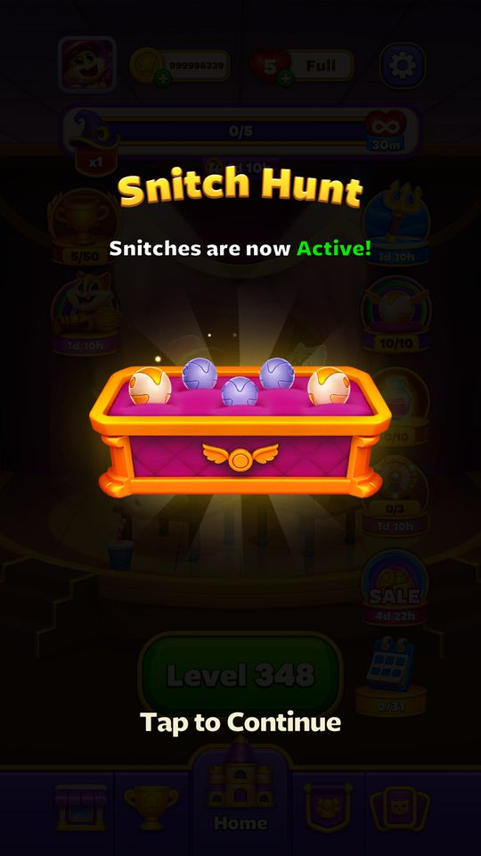

Trạng thái đối soát danh mục
{
"feature": "Snitch",
"phase": "core_and_levels_last",
"device_status_now": "available_now",
"execution_status_now": "pending_use_case_branch",
"full_feature_runtime_verified": false,
"remaining_dependencies": [
{
"kind": "use_case_branch_pending",
"uc_ids_without_any_case": [
"UC-01",
"UC-02",
"UC-03",
"UC-04",
"UC-05",
"UC-06",
"UC-07",
"UC-08",
"UC-09",
"UC-10",
"UC-11",
"UC-12",
"UC-13",
"UC-14",
"UC-15",
"UC-16",
"UC-17",
"UC-18"
],
"detail": "Chưa có case vòng 2 cho feature này. Cuối lượt core: info popup/icon và gate hunt nếu hiện; sau đó chọn level có cơ chế tự nhiên.",
"specific_condition": "Không tự thêm Snitch vào board hoặc suy absence4306board là production không có."
}
],
"genuinely_missing_or_stale_data": [],
"date": "2026-11-16",
"source": "facts/review_20261116_round2/all58_data_quality.json",
"public_source": "../data/review_20261116_round2/all58_data_quality.json",
"source_scope": "Full source row remains external; no self/source-GDD hash embedded.",
"counts": {
"uc": 18,
"configs": 27,
"models": 1,
"segment_rows": 0,
"historical_cases": 0,
"round2_cases": 0,
"round2_images": 0
},
"round2_case_ids": [],
"round2_branch_ucs": [],
"full_uc_pass": false
}Nguồn mới và việc tiếp theo · Snitch (Snitch Hunt)
Cuối lượt core: info popup/icon và gate hunt nếu hiện; sau đó chọn level có cơ chế tự nhiên.
UC ưu tiên: UC-05 Xem popup hướng dẫn, UC-18 Snitch chiếm ô icon ở Home
Gate runtime: gate của snapshot ban đầu trước phục hồi; xem actual và giới hạn round2 phía trên, không suy ra full-feature pass.
Liên kết config: exact_model_source_association
Đủ entry, precondition và 908 UC · GDD hiện tại đầy đủ · Kết luận mã và phần chưa chứng minh
Segment/A/B: default và nhãn variant chỉ là bằng chứng cấu hình; chưa có assignment, phân bổ traffic hoặc uplift mới.
Hồ sơ Snitch: 27 config, 6 gap, 6/18 UC có ảnh tham chiếu. Cache và instance ghi ngày tại nguồn; kết quả kiểm chứng mới nằm trong các case dưới đây; không áp dụng cho mọi UC.
Đủ 11 mục đánh giá cho hồ sơ này — data / flow / UC / ảnh / segment / AB / kiến trúc / phần thiếu
Theo dõi toàn bộ 58 danh mục · Full hồ sơ đối soát · Tải GDD JSON đầy đủ · Metadata UI và bảng thưởng đầy đủ
| Mục | Trạng thái theo bằng chứng |
|---|---|
| purpose | documented_static_scope |
| unlock | described_historical_conditions_runtime_boundary_unverified |
| entry_flow | documented_paths_not_all_executed |
| config | source_bound_catalog_present |
| reward | documented_static_rewards_runtime_grant_not_fully_verified |
| use_cases | specified_not_executed_in15nov_ledger |
| screenshots | historical_references_only |
| runtime_actual | not_observed_in15nov_ledger |
| segment_ab | not_identified_in_sources |
| storage_backend_analytics | See full JSON |
| remaining_next_step | See full JSON |
Đã rà hồ sơ không đồng nghĩa mọi nhánh runtime đã pass. Nguồn và bước còn lại nằm trong JSON đầy đủ.
Segment và A/B của feature — 0 dòng có liên hệ nguồn
No matchingrow does not prove no segmentation/AB. Rewardbucketfalsepositives remain explicitly classified.
Consumer, matching basis, selector và giới hạn: full dữ liệu riêng của feature · review chung.
Đối chiếu code / asset · 15/11 — 5 finding
Code/asset 0.0.3063, cache ghi ngày và asset bundle đã đọc từ thiết bị 0.0.3129; mỗi finding giữ đúng nguồn/build, không nâng kiểm tra file thành runtime pass.
MS-CORE-BODY-13 — Snitch count lấy list động · partial_static_code_unresolved
OnLevelStart lưu externalSnitches và levelSnitchInfo; GetRedSnitchMoveTargetByIndex/GetNormalSnitchMoveTargetForIndex lọc/duyệt nguồn external+level lists. Không có literal max2/max3 trong các body target/entrance đã đọc; count phụ thuộc input, filtering và số target hợp lệ.
Còn lại: Max thiết kế/global cap chưa được chứng minh; cần external grant consumer/config và stress board, không đổi thành unlimited.
MS-CORE-BODY-14 — Snitch có entrance và cell-top callback · resolved_static_code_historical_build
OnLevelStart reset box state rồi state1. Box Update chờ new-blocker intro, entry animation, tutorial, rise/move red, rise/move normal theo states1..8. SnitchItem.OnBottleWatersUpdated chỉ complete khi belongingCell.WaterItem==topWaterItem; đánh dấu completed, lock bottle, tạo tween callback <Complete>b__18_0 dispatch normal/red manager effect. Không phải mỗi move bất kỳ đều tự kích Snitch.
Còn lại: Đối chiếu nhánh này trên app0.0.3129 ARM64; chưa là runtime pass.
MS-FDG-039 — SnitchSpawnInfo (dữ liệu đặt Snitch trong level) nằm trong định dạng level, chưa khảo sát ở tài liệu này · partial_actual_evidence
Đã survey4306board vàconverterId27→SnitchItemModel với ItemType/TargetCellIndices/TargetBottleIndices. Không thấyserializedSnitch27 hoặc top-levelexternalSnitchkey trong hai tậpboard này.
Còn lại: Chưa có mẫuSnitchSpawnInfo thực từseedSL/newerboard ngoài tập đã tải; không kết luậnSnitch không tồn tại tronggame.
MS-CODE-50 — Snitch priority có constants nhưng chưa đủ full table · partial_static_code
GetBlockerPriorityScore trả int.MinValue cho target khônghợp lệ; các nhánh có ưu tiên2/1 theo fillamount,15 khi waterpredicate và4 khi chaiempty; forceTarget bỏ một số gate. Khi đãchọn blocker type, score giảm1000×sốlần typeđãchọn. Nhiều nhánh typehierarchy/vtable chưa map đủ sang blocker names nên không phát một bảng heuristic hoànchỉnh.
Còn lại: Map toàn bộ type-hierarchy branches và lambda predicates với ItemType; cần disassembly/board minimal xácminh từngnhánh.
MS-Snitch-G003 — · resolved_static_snapshot
Hai Snitch animation asset có numeric và curve inline đầy đủ; không phải chỉ có curve reference. Xuất toàn bộ keyframe/tangent/weight cùng giá trị duration.
Còn lại: Kiểm chứng effective config/asset và nhánh runtime trên đúng build nếu cần.
Snitch Hunt (trợ thủ Snitch)
Thắng 10 level để kích hoạt bầy Snitch bay vào ván, lật ô ẩn hoặc phá vật cản giúp người chơi.
Mô tả
- Snitch Hunt là trợ thủ dạng 'sinh vật bay' xuất hiện trong level sau khi người chơi thắng đủ số level ở Home.
- Khi đã kích hoạt, vào ván sẽ có một cái hộp (SnitchBoxView) thả ra các con Snitch.
- Snitch Thường (Normal/Silver, ItemType 0) bay tới một ô ẩn và lật mở nó, để lộ màu nước phía dưới.
- Snitch Đỏ (Red/Power, ItemType 1) bay tới một vật cản và phá nó.
- Snitch được đặt sẵn trong dữ liệu level (SnitchSpawnInfo) hoặc bay vào từ ngoài bàn (ExternalSnitchObject).
- Mục tiêu do SnitchTargetFinder chọn theo thứ tự ưu tiên: mục tiêu cố định trong level, rồi mục tiêu ngẫu nhiên có trọng số, rồi mục tiêu dự phòng.
- Giống Super Charger, trạng thái kích hoạt kéo dài đến khi người chơi thua một ván, có popup Are You Sure cảnh báo trước.
- Toàn bộ do khoá remote config SnitchConfigModel điều khiển; mặc định client tắt và mở từ level 290.
- Nút ở Home hiển thị vòng tròn tiến độ dạng {0}/{1} kèm hoạt ảnh 'thu thập' khi vừa tăng tiến độ.
Còn thiếu / chưa xác minh
Mở khóa & điểm vào
SnitchService.IsEligible(): SnitchConfigModel.IsEnabled = true và tiến độ người chơi ≥ FirstLevelToShow (mặc định client 290). SnitchService.IsActive() thêm điều kiện Progress ≥ TargetLevelProgress (mặc định client 10).
Điểm vào:
- SnitchLobbyButton ở Home (vòng tròn tiến độ {0}/{1}, bấm mở SnitchJoinPopUp — impression source LobbyIcon)
- SnitchJoinPopUp tự bật khi về Home (TryShowSnitchPopUpCommand / TryShowSnitchPopUpOnLobbyReturnCommand)
- SnitchActivationPopUp khi vừa đủ tiến độ (TryPlaySnitchActivationCommand — đứng trước MagicBottleCongrats trong chuỗi return-to-home)
- SnitchInfoButton → SnitchInfoPopUp
- Trong level: hộp Snitch (SnitchBoxView) và SnitchLevelTutorialPopUp lần đầu
- SnitchAreYouSureContainer khi định bỏ ván
Cách hoạt động
- Ở Home, mỗi lần thắng level SnitchService.TryIncreaseProgress() tăng SnitchModel.Progress thêm 1.
- Khi Progress đạt TargetLevelProgress (10), service bắn analytics snitch_claim và Snitch trở thành Active.
- TryResetProgress() rẽ nhánh: còn đủ điều kiện thì tăng tiến độ, không đủ (thua ván / config tắt) thì đặt Progress = 0 và bắn snitch_lost.
- SnitchLobbyButton hiển thị vòng tròn tiến độ; IsLobbyButtonProgressIncreased so Progress với LastSeenLobbyButtonProgress.
- Nếu tăng, ShouldShowCollectibleEarnAnimationOnLobbyReturn chạy hoạt ảnh thu thập, sau đó TrySetLastSeenLobbyButtonProgress ghi lại mốc đã xem.
- Khi đủ tiến độ, TryPlaySnitchActivationCommand mở SnitchActivationPopUp (đứng trước MagicBottleCongrats trong chuỗi return-to-home).
- Vào level: SnitchInGameManager.Initialize(bottleCollections) dựng SnitchTargetFinder theo bàn chơi hiện tại.
- OnLevelStart(externalSnitches, levelSnitchInfo, onComplete) chạy hoạt ảnh hộp Snitch bay vào theo SnitchAnimationConfig (LevelStartDelay, SnitchBoxEntryDuration, SnithBoxWaitDuration, SnitchBoxExitDuration, SnitchesPerformDelay).
- Mỗi con Snitch là SnitchItem (kế thừa ABlockerItem, IsOverlay = true) mang SnitchItemModel với ItemType, TargetCellIndices và TargetBottleIndices.
- PerformSnitch(snitchItem) rẽ nhánh theo loại: PerformNormalSnitch hoặc PerformRedSnitch.
- PerformNormalSnitch gọi GetNormalSnitchTarget: ưu tiên GetFixedNormalSnitchTarget nếu level chỉ định, ngược lại GetRandomNormalSnitchTarget; snitch ngoài bàn dùng GetExternalNormalSnitchTarget hoặc GetDummyNormalSnitchTarget.
- OnNormalSnitchHitTarget(snitchTarget) → RevealCell(targetCell, targetBottle) lật ô ẩn, có thể RevealBottleCells cả chai; nếu IsWaterColorChangeActive thì ChangeSnitchWaterColor(water) đổi màu nước cho khớp.
- PerformRedSnitch gọi GetRedSnitchTargetItem: GetRedSnitchTargetBlockers thu thập blocker theo chai chỉ định, theo từng chai hoặc overlay, rồi SortBlockers dùng GetBlockerPriorityScore chọn blocker đáng phá nhất.
- MoveSnitchItemToTarget bay tới đích theo đường Bezier (tham số MinMaxBezierDurationForHit, MinMaxBezierLengthForHit, SnitchMoveSpeed, MaxDistanceCap), rồi OnRedSnitchHitTarget(targetItem) phá blocker.
- Snitch Đỏ có khoảng chờ khác nhau theo loại blocker mục tiêu (redSnitchPerformIntervals, TryGetRedSnitchPerformInterval).
- Sau khi hành động, Snitch có thể đậu lại (PlaySnitchSitAnimation, clip 'SnitchSit') hoặc được đặt vào ô mới theo SnitchSpawnInfo.
- Lần đầu gặp trong level, ShouldShowTutorial() → StartTutorial() mở SnitchLevelTutorialPopUp; Snitch cũng nhường lượt cho luồng giới thiệu blocker mới, và OnAllStatesCompleted báo hoàn tất chuỗi Snitch của ván.
Luồng chi tiết theo code
Ở Home: mỗi lần thắng level, SnitchService.TryIncreaseProgress() tăng SnitchModel.Progress 1 (chỉ khi EventShownInLifeTime = true và Progress chưa bằng TargetLevelProgress); khi Progress đạt TargetLevelProgress, service bắn analytics snitch_claim. TryResetProgress() làm hai việc: nếu vẫn đủ điều kiện thì tăng tiến độ như trên, còn nếu không (thua ván / config tắt) thì đặt Progress = 0, LastSeenLobbyButtonProgress = 0 và bắn snitch_lost. SnitchLobbyButton hiển thị vòng tròn tiến độ; SnitchService.IsLobbyButtonProgressIncreased so Progress hiện tại với LastSeenLobbyButtonProgress để biết có cần chạy hoạt ảnh 'thu thập' khi về Home (ShouldShowCollectibleEarnAnimationOnLobbyReturn), sau đó TrySetLastSeenLobbyButtonProgress ghi lại mốc đã xem. Trong level: SnitchInGameManager.Initialize(bottleCollections) dựng SnitchTargetFinder; OnLevelStart(externalSnitches, levelSnitchInfo, onComplete) chạy hoạt ảnh hộp Snitch bay vào (SnitchBoxView, SnitchAnimationConfig điều khiển toàn bộ nhịp: LevelStartDelay, SnitchBoxEntryDuration, SnithBoxWaitDuration, SnitchBoxExitDuration, SnitchesPerformDelay, SnitchMoveSpeed...). Mỗi con Snitch (SnitchItem, kế thừa ABlockerItem, IsOverlay = true) mang SnitchItemModel với ItemType (Normal/Red), TargetCellIndices và TargetBottleIndices — tức level designer có thể chỉ định cứng mục tiêu. PerformSnitch(snitchItem) rẽ nhánh: PerformNormalSnitch → SnitchTargetFinder.GetNormalSnitchTarget (GetFixedNormalSnitchTarget nếu level chỉ định, ngược lại GetRandomNormalSnitchTarget; với snitch ngoài bàn thì GetExternalNormalSnitchTarget/GetDummyNormalSnitchTarget) → OnNormalSnitchHitTarget(snitchTarget) → RevealCell(targetCell, targetBottle) lật ô ẩn, có thể RevealBottleCells cả chai; nếu IsWaterColorChangeActive thì ChangeSnitchWaterColor(water) đổi màu nước cho khớp. PerformRedSnitch → SnitchTargetFinder.GetRedSnitchTargetItem: GetRedSnitchTargetBlockers thu thập blocker (theo chai chỉ định GetRedSnitchTargetBlockersByBottleIndices, theo từng chai GetRedSnitchTargetBlockersByBottle, hoặc overlay GetRedSnitchTargetOverlayBlockers), rồi SortBlockers dùng GetBlockerPriorityScore để chọn blocker 'đáng phá nhất'; nếu không có blocker và IsFallbackPremiumHitActive = true thì dùng forceTarget hoặc GetMaxQuestionMarkBottle / GetRandomFallbackSnitchSpawnTarget. MoveSnitchItemToTarget bay tới đích (đường Bezier, tham số MinMaxBezier* trong SnitchAnimationConfig), OnRedSnitchHitTarget(targetItem) phá blocker. Trong lúc bay, LockTarget/UnlockTarget và SnitchTargetFinder.LockItem/UnlockItem ngăn hai con Snitch nhắm cùng một mục tiêu. Sau khi hành động xong, Snitch có thể đậu lại (PlaySnitchSitAnimation, clip 'SnitchSit') hoặc được đặt vào ô mới (OnRedSnitchPlaceTarget/OnNormalSnitchPlaceTarget theo SnitchSpawnInfo). Tutorial: ShouldShowTutorial() → StartTutorial() mở SnitchLevelTutorialPopUp, OnTutorialStarted/OnTutorialEnd tạm dừng và tiếp tục chuỗi. Snitch cũng nhường lượt cho luồng giới thiệu blocker mới (OnNewBlockerIntroductionStarted/End). Kết thúc: OnAllStatesCompleted báo hoàn tất chuỗi Snitch của ván.
Ảnh chụp màn hình (6)
6 ảnh chụp trong game (LDPlayer, bản 0.0.3129, tài khoản thử level 321 → 351 (07/10/2026)). Bấm ảnh để phóng to; ảnh chụp lịch sử mở PNG gốc. Nhãn UC dẫn tới use case tương ứng.



 2 vàng Power, 3 bạc Silver)
2 vàng Power, 3 bạc Silver)

Phần thưởng
TIẾN ĐỘ VÀ KÍCH HOẠT (SnitchConfigModel.json, client default)
| Mốc | Điều kiện | Kết quả |
|---|---|---|
| Đủ điều kiện | IsEnabled = true và tiến độ người chơi >= level 290 | Thấy nút Snitch ở Home (IsEligible) |
| Tích tiến độ | Mỗi level thắng | Progress 1 |
| Kích hoạt | Progress đạt 10 (TargetLevelProgress) | Snitch Active bắn analytics snitch_claim mở SnitchActivationPopUp |
| Mất Snitch | Thua một ván hoặc config tắt | Progress = 0 LastSeenLobbyButtonProgress = 0 bắn snitch_lost |
HAI LOẠI SNITCH (enum SnitchItemType)
| Mã | Loại | Tác dụng |
|---|---|---|
| 0 | Normal (Silver) | Lật mở 1 ô ẩn có thể lộ cả chai đổi màu nước tương ứng nếu IsWaterColorChangeActive = true |
| 1 | Red (Power) | Phá 1 vật cản được GetBlockerPriorityScore chấm điểm cao nhất |
SỐ SNITCH VÀ ĐỘ TRỄ (SnitchAnimationConfig.asset)
| Thứ tự | Snitch | Tham số delay |
|---|---|---|
| 1 | Snitch xám thứ nhất | FirstGraySnitchHitDelay FirstGraySnitchRiseDelay |
| 2 | Snitch xám thứ hai | SecondGraySnitchHitDelay SecondGraySnitchRiseDelay |
| 3 | Snitch xám thứ ba | ThirdGraySnitchHitDelay ThirdGraySnitchRiseDelay |
| 4 | Snitch vàng thứ nhất | FirstYellowSnitchRiseDelay FirstYellowSnitchSitRiseDelay |
| 5 | Snitch vàng thứ hai | SecondYellowSnitchRiseDelay SecondYellowSnitchSitRiseDelay |
| Tổng | Tối đa 3 xám + 2 vàng | (suy luận từ số tham số delay có sẵn) |
NGUỒN MỞ POPUP (analytics)
| Enum | Giá trị | Ý nghĩa |
|---|---|---|
| SnitchInfoPopUpImpressionSource | InfoButton=0, FirstOpen=1 | Nguồn mở SnitchInfoPopUp |
| SnitchJoinPopUpImpressionSource | LobbyIcon=0, FirstOpen=1 | Nguồn mở SnitchJoinPopUp |
Phần thưởng theo code
| Ngữ cảnh | Phần thưởng | Evidence |
|---|---|---|
| Snitch Thường (Silver) hành động | Lật mở 1 ô ẩn (có thể cả chai) và đổi màu nước tương ứng | SnitchInGameManager.RevealCell; SnitchInGameManager.RevealBottleCells; SnitchInGameManager.ChangeSnitchWaterColor |
| Snitch Đỏ (Power) hành động | Phá 1 vật cản (blocker) được ưu tiên cao nhất | SnitchInGameManager.OnRedSnitchHitTarget; SnitchTargetFinder.GetBlockerPriorityScore |
Số liệu chính
| Chỉ số | Giá trị | Nguồn |
|---|---|---|
| Bật mặc định (client) | false | SnitchConfigModel.json: IsEnabled |
| Level tối thiểu | 290 | SnitchConfigModel.json: FirstLevelToShow |
| Số level phải thắng để kích hoạt | 10 | SnitchConfigModel.json: TargetLevelProgress |
| Cho phép mục tiêu dự phòng của Snitch Đỏ | true | SnitchConfigModel.json: IsFallbackPremiumHitActive |
| Đổi màu nước sau khi lật ô | true | SnitchConfigModel.json: IsWaterColorChangeActive |
| Số loại Snitch | 2 (Normal=0, Red=1) | SnitchItemType |
| Số Snitch xám có tham số delay riêng | 3 | SnitchAnimationConfig.asset |
| Số Snitch vàng có tham số delay riêng | 2 | SnitchAnimationConfig.asset |
| Clip hoạt ảnh đậu | "SnitchSit" | SnitchItem.PlaySnitchSitAnimation |
| Tên khối đồng bộ | "SnitchModel" | SnitchDataService.GetSyncName |
| Số trường của SnitchModel | 5 (Progress, LastSeenLobbyButtonProgress, IsInfoPopUpIntroduced, IsLevelTutorialIntroduced, EventShownInLifeTime) | SnitchModel |
| Số điểm vào tính năng | 6 | Snitch.entry_points |
| Số sự kiện analytics | 5 | Snitch.analytics |
| Số popup của tính năng | 3 (SnitchJoinPopUp, SnitchInfoPopUp, SnitchLevelTutorialPopUp) | IPopUpService keys |
| Số khoá localization | 9 (SnitchJoinTitle … SnitchAreYouSure) | appendix/localization.tsv |
| Số bước hướng dẫn trong SnitchInfoPopUp | 3 bước | SnitchInfoStep1/2/3 |
| Kiểu Snitch trên bàn | SnitchItem kế thừa ABlockerItem, IsOverlay = true | Board.Items.Scripts.Snitch.SnitchItem |
| Đồng bộ dữ liệu | sync-data (client→server) | Snitch.backend |
| Khoá chữ số level cần thắng | "SnitchInfoStep1" | SnitchInfoPopUp.max_level_localization_term |
| Kiểu mục tiêu Snitch Đỏ dự phòng | forceTarget / GetMaxQuestionMarkBottle / GetRandomFallbackSnitchSpawnTarget | SnitchTargetFinder |
Ghi chú thiết kế
- Ngưỡng 10 level thắng liên tiếp biến Snitch thành phần thưởng cho chuỗi chơi tốt, mất ngay khi thua một ván.
- Hai loại Snitch chia vai rõ: bạc giải quyết thông tin (ô ẩn), đỏ giải quyết chướng ngại (blocker).
- Cho phép level designer chỉ định cứng mục tiêu giúp kiểm soát trải nghiệm ở các level tutorial hay showcase.
- Cơ chế khoá mục tiêu tránh hai Snitch lãng phí lượt vào cùng một ô, giữ giá trị cảm nhận của trợ thủ.
- Đặt mở khoá ở level 290 khiến Snitch là phần thưởng dành cho người chơi lâu năm, không làm loãng độ khó giai đoạn đầu.
Use case (18)
Bấm vào từng use case để mở. Mở/đóng tất cả
UC-01 Server bật Snitch Hunt
Các bước- FirebaseRemoteConfigResolver đọc SnitchConfigModel
- SnitchService.GetConfig() trả model
- IsEligible/IsActive dùng IsEnabled, FirstLevelToShow, TargetLevelProgress
| Actor | Server |
|---|---|
| Trigger | Đổi khoá Firebase SnitchConfigModel |
| Điều kiện | - |
| Kết quả | Icon lobby và luồng in-game bật cho nhóm người chơi phù hợp |
| Quy tắc / số liệu | Mặc định client: IsEnabled=false, FirstLevelToShow=290, TargetLevelProgress=10, IsFallbackPremiumHitActive=true, IsWaterColorChangeActive=true |
| Evidence | SnitchService.GetConfig; SnitchService.IsEligible; SnitchConfigModel |
UC-02 Tăng tiến độ khi thắng level
Các bước- SnitchService.TryIncreaseProgress()
- SnitchDataService.IncreaseProgress() tăng Progress, bật _isMarkedForLateUpdate + _isDataChangedSinceLastSave
- Khi Progress == TargetLevelProgress → bắn analytics snitch_claim (progress, snitch_progress)
| Actor | System |
|---|---|
| Trigger | Thắng một level ở Home |
| Điều kiện | IsEligible = true, EventShownInLifeTime = true, Progress < TargetLevelProgress |
| Kết quả | Vòng tiến độ trên SnitchLobbyButton nhích lên; đủ 10/10 thì Snitch được kích hoạt |
| Quy tắc / số liệu | TargetLevelProgress mặc định 10; chuỗi hiển thị "{0}/{1}" trên nút lobby |
| Evidence | SnitchService.TryIncreaseProgress; SnitchDataService.IncreaseProgress; SnitchLobbyButton.UpdateState; EventSender.SendSnitchClaim |
UC-03 Mất Snitch khi thua ván
Các bước- SnitchService.TryResetProgress()
- Nhánh không đủ điều kiện: Progress = 0, LastSeenLobbyButtonProgress = 0, đánh dấu dữ liệu bẩn
- Bắn analytics snitch_lost (progress)
| Actor | System |
|---|---|
| Trigger | Thua/bỏ level, hoặc không còn đủ điều kiện |
| Điều kiện | - |
| Kết quả | Tiến độ về 0, phải thắng lại đủ level |
| Quy tắc / số liệu | Chữ cảnh báo SnitchInfoWarning: 'Snitches will be active until you fail!' |
| Evidence | SnitchService.TryResetProgress; SnitchDataService.ResetProgress; EventSender.SendSnitchLost |
UC-04 Popup giới thiệu lần đầu
Các bước- TryShowSnitchPopUpOnLobbyReturnCommand kiểm tra SnitchService.ShouldAutoOpenPopUp()
- Mở SnitchJoinPopUp (SnitchJoinPopUpArguments với impression source FirstOpen)
- PlayFirstShowEverAnimations, OpenAutomaticallyInfoPopUp mở luôn SnitchInfoPopUp
- MarkEventShownInLifeTime(); analytics snitch_popup_impression
| Actor | System |
|---|---|
| Trigger | Về Home khi vừa đủ điều kiện |
| Điều kiện | EventShownInLifeTime = false |
| Kết quả | Người chơi biết tính năng, tiến độ bắt đầu tính |
| Quy tắc / số liệu | SnitchJoinPopUpImpressionSource = {LobbyIcon:0, FirstOpen:1}. Tiêu đề SnitchJoinTitle 'Snitch Hunt'; tiến độ SnitchJoinProgressText / SnitchJoinProgressCompletedText |
| Evidence | SnitchService.ShouldAutoOpenPopUp; SnitchJoinPopUp.ShowAsync; SnitchJoinPopUp.OpenAutomaticallyInfoPopUp; EventSender.SendSnitchPopUpImpression |
UC-05 Xem popup hướng dẫn
Các bước- SnitchInfoPopUpArguments(impressionSource) → mở SnitchInfoPopUp
- _maxLevelText điền số level cần thắng qua khoá SnitchInfoStep1
- Hiển thị 3 bước: SnitchInfoStep1 (thắng {0} level), SnitchInfoStep2 (kích hoạt), SnitchInfoStep3Power / SnitchInfoStep3Silver (mô tả 2 loại Snitch) và SnitchInfoWarning
- MarkInfoPopUpAsIntroduced()
| Actor | Player |
|---|---|
| Trigger | Bấm SnitchInfoButton hoặc popup tự mở |
| Điều kiện | - |
| Kết quả | Analytics snitch_info_impression (impression_source, snitch_progress) |
| Quy tắc / số liệu | SnitchInfoPopUpImpressionSource = {InfoButton:0, FirstOpen:1}; hằng SnitchInfoPopUp.max_level_localization_term = "SnitchInfoStep1" |
| Evidence | SnitchInfoPopUp.Show; SnitchService.MarkInfoPopUpAsIntroduced; SnitchService.IsInfoPopUpIntroduced; EventSender.SendSnitchInfoPopUpImpression |
UC-06 Popup báo đã kích hoạt
Các bước- TryPlaySnitchActivationCommand chạy trong chuỗi return-to-home
- Mở SnitchActivationPopUp, PlayAnimationsWithInterval
- Analytics snitch_activation_impression
| Actor | System |
|---|---|
| Trigger | Về Home khi vừa đạt TargetLevelProgress |
| Điều kiện | - |
| Kết quả | Người chơi biết Snitch đã sẵn sàng; chữ SnitchJoinProgressCompletedText 'Snitches are now Active!' |
| Quy tắc / số liệu | Lệnh này đứng ngay trước TryPlayMagicBottleCongratsCommand trong danh sách return-to-home |
| Evidence | TryPlaySnitchActivationCommand; SnitchActivationPopUp.Show; EventSender.SendSnitchActivationPopUpImpression |
UC-07 Hoạt ảnh thu thập tiến độ khi về Home
Các bước- SnitchService.ShouldShowCollectibleEarnAnimationOnLobbyReturn() dựa trên IsLobbyButtonProgressIncreased()
- SnitchLobbyButton.PlayCollectibleAndProgressAnimation() chạy LobbyIconCollectibleAnimation + CircleProgressBar (SnitchLobbyButtonAnimationConfig: PunchRotation, PunchDelay, PunchDuration, PunchVibraton, PunchElasticity, CircleProgressBarAnimationDuration/Delay/Curve, SitPosition)
- SnitchService.TrySetLastSeenLobbyButtonProgress() ghi mốc đã xem
| Actor | System |
|---|---|
| Trigger | Về Home sau khi thắng |
| Điều kiện | Progress > LastSeenLobbyButtonProgress |
| Kết quả | Người chơi thấy Snitch bay về đậu trên nút, vòng tiến độ chạy |
| Quy tắc / số liệu | LastSeenLobbyButtonProgress lưu trong SnitchModel và đồng bộ server |
| Evidence | SnitchService.ShouldShowCollectibleEarnAnimationOnLobbyReturn; SnitchService.IsLobbyButtonProgressIncreased; SnitchLobbyButton.PlayCollectibleAndProgressAnimation; SnitchService.TrySetLastSeenLobbyButtonProgress |
UC-08 Hộp Snitch mở đầu ván
Các bước- SnitchInGameManager.OnLevelStart(externalSnitches, levelSnitchInfo, onComplete)
- SnitchBoxView chạy hoạt ảnh vào/ra theo SnitchAnimationConfig (SnitchBoxStartPosition → SnitchBoxTargetPosition → SnitchBoxExitPosition, các curve BoxEntry/BoxExit/BoxRotation)
- Chờ LevelStartDelay rồi thả lần lượt các Snitch, cách nhau SnitchesPerformDelay
- _onLevelStartCompleteAction được gọi khi xong
| Actor | System |
|---|---|
| Trigger | Bắt đầu level khi Snitch đang Active |
| Điều kiện | SnitchInGameManager.IsLevelSnitchSpawnActive() |
| Kết quả | Snitch xuất hiện trên bàn, sẵn sàng hành động |
| Quy tắc / số liệu | Số Snitch và vị trí lấy từ dữ liệu level (SnitchSpawnInfo) hoặc từ danh sách ExternalSnitchObject bay vào từ ngoài |
| Evidence | SnitchInGameManager.OnLevelStart; SnitchBoxView; SnitchAnimationConfig; SnitchInGameManager.IsLevelSnitchSpawnActive |
UC-09 Snitch Thường (Silver) lật mở ô ẩn
Các bước- PerformNormalSnitch(normalSnitch)
- SnitchTargetFinder.GetNormalSnitchTarget: nếu SnitchItemModel.TargetBottleIndices/TargetCellIndices có giá trị → GetFixedNormalSnitchTarget; ngược lại GetRandomNormalSnitchTarget
- Bay tới đích (NormalSnitchMoveTarget, MoveSnitchItemToTarget)
- OnNormalSnitchHitTarget(snitchTarget) → RevealCell(targetCell, targetBottle), có thể RevealBottleCells(bottle)
- Nếu IsWaterColorChangeActive → ChangeSnitchWaterColor(water)
| Actor | System |
|---|---|
| Trigger | PerformSnitch với SnitchItemType.Normal |
| Điều kiện | Còn ô dấu hỏi trên bàn |
| Kết quả | Ô ẩn được lật, người chơi thấy màu nước thật |
| Quy tắc / số liệu | SnitchItemType = {Normal:0, Red:1}. Text mô tả: SnitchInfoStep3Silver 'Silver Snitch reveals ...' |
| Evidence | SnitchInGameManager.PerformNormalSnitch; SnitchTargetFinder.GetNormalSnitchTarget; SnitchInGameManager.RevealCell; SnitchInGameManager.ChangeSnitchWaterColor |
UC-10 Snitch Đỏ (Power) phá vật cản
Các bước- PerformRedSnitch(redSnitch)
- SnitchTargetFinder.GetRedSnitchTargetItem: gom blocker (theo bottleIndices chỉ định, theo từng chai, hoặc overlay), SortBlockers theo GetBlockerPriorityScore
- RedSnitchMoveTarget lưu TargetItem + SpawnInfo; MoveSnitchItemToTarget bay tới (GetTargetItemRowIndex chọn cung đường theo hàng)
- OnRedSnitchHitTarget(targetItem) phá blocker
| Actor | System |
|---|---|
| Trigger | PerformSnitch với SnitchItemType.Red |
| Điều kiện | Có blocker trên bàn |
| Kết quả | Một vật cản bị loại bỏ |
| Quy tắc / số liệu | SnitchAnimationConfig.redSnitchPerformIntervals cho phép đặt nhịp riêng theo ItemType (TryGetRedSnitchPerformInterval); SnitchInfoStep3Power 'Power Snitch removes blocker!' |
| Evidence | SnitchInGameManager.PerformRedSnitch; SnitchTargetFinder.GetRedSnitchTargetItem; SnitchTargetFinder.SortBlockers; SnitchTargetFinder.GetBlockerPriorityScore; SnitchInGameManager.OnRedSnitchHitTarget |
UC-11 Không có mục tiêu hợp lệ (fallback)
Các bước- SnitchInGameManager.IsFallbackPremiumHitActive() đọc SnitchConfigModel.IsFallbackPremiumHitActive
- Bật → SortBlockers/GetRedSnitchTargetBlockers chạy với forceTarget = true, hoặc GetMaxQuestionMarkBottle chọn chai nhiều dấu hỏi nhất
- Vẫn không có → GetRandomFallbackSnitchSpawnTarget(includeQuestionMarkCells) chọn ô đặt Snitch
- OnRedSnitchPlaceTarget / OnNormalSnitchPlaceTarget đặt Snitch vào ô mới thay vì tấn công
| Actor | System |
|---|---|
| Trigger | Bàn không còn blocker/ô ẩn phù hợp |
| Điều kiện | - |
| Kết quả | Snitch không bị 'đứng hình', luôn có hành động |
| Quy tắc / số liệu | IsFallbackPremiumHitActive mặc định client = true; _placedToNoQuestionMarkCell theo dõi trường hợp phải đặt vào ô không có dấu hỏi |
| Evidence | SnitchInGameManager.IsFallbackPremiumHitActive; SnitchTargetFinder.GetRandomFallbackSnitchSpawnTarget; SnitchTargetFinder.GetMaxQuestionMarkBottle; SnitchInGameManager.OnRedSnitchPlaceTarget |
UC-12 Hai Snitch không tranh cùng một mục tiêu
Các bước- SnitchInGameManager.LockTarget(targetItem) → SnitchTargetFinder.LockItem thêm vào _lockedSnitchTargets
- MarkTargetItemAsSelected(targetItem) và SnitchTargetFinder.AddSelectedBlockerType(type) ghi loại đã chọn vào _selectedBlockerTypes
- Sau khi xong: UnlockTarget → UnlockItem
- AnimationLockTargetBottle / AnimationUnlockTargetBottle khoá tương tác chai trong lúc hoạt ảnh chạy
| Actor | System |
|---|---|
| Trigger | Nhiều Snitch hoạt động cùng lúc |
| Điều kiện | - |
| Kết quả | Không có hai con Snitch bay vào cùng blocker; người chơi không thao tác được chai đang bị nhắm |
| Quy tắc / số liệu | SnitchTarget là struct-like (Cell + BottleItem) có Equals/GetHashCode để so sánh mục tiêu |
| Evidence | SnitchInGameManager.LockTarget; SnitchTargetFinder.LockItem; SnitchInGameManager.AnimationLockTargetBottle; SnitchTarget.Equals |
UC-13 Tutorial Snitch trong level
Các bước- SnitchInGameManager.ShouldShowTutorial() → StartTutorial() mở popup tên "SnitchLevelTutorialPopUp"
- OnTutorialStarted() tạm dừng chuỗi Snitch; OnTutorialEnd() chạy tiếp
- SnitchService.MarkLevelTutorialAsIntroduced()
| Actor | System |
|---|---|
| Trigger | Lần đầu Snitch xuất hiện trong ván |
| Điều kiện | SnitchService.ShouldShowLevelTutorial() = true (IsLevelTutorialIntroduced = false) |
| Kết quả | Người chơi hiểu Snitch làm gì; chỉ hiện một lần trọn đời |
| Quy tắc / số liệu | Cờ IsLevelTutorialIntroduced nằm trong SnitchModel và được đồng bộ server |
| Evidence | SnitchInGameManager.ShouldShowTutorial; SnitchInGameManager.StartTutorial; SnitchService.MarkLevelTutorialAsIntroduced; SnitchService.ShouldShowLevelTutorial |
UC-14 Nhường lượt cho phần giới thiệu blocker mới
Các bước- OnNewBlockerIntroductionStarted() tạm dừng chuỗi Snitch
- Sau khi giới thiệu xong, OnNewBlockerIntroductionEnd() cho Snitch tiếp tục
- OnAllStatesCompleted() khi mọi trạng thái vào ván đã xong
| Actor | System |
|---|---|
| Trigger | Level có blocker lần đầu xuất hiện |
| Điều kiện | - |
| Kết quả | Hai luồng hoạt ảnh đầu ván không chồng lên nhau |
| Quy tắc / số liệu | Analytics new_blocker_introduced (blocker_id) do hệ blocker bắn riêng |
| Evidence | SnitchInGameManager.OnNewBlockerIntroductionStarted; SnitchInGameManager.OnNewBlockerIntroductionEnd; SnitchInGameManager.OnAllStatesCompleted |
UC-15 Snitch đậu lại trên chai sau khi hành động
Các bước- SnitchItem.PlaySnitchSitAnimation() phát clip "SnitchSit"
- SnitchItem.OnWaterRotate / OnBottleWatersUpdated cập nhật vị trí khi nước trong chai đổi
- SnitchItem.Complete() khi Snitch hoàn tất vòng đời và được thu hồi (OnRecycle)
| Actor | System |
|---|---|
| Trigger | Kết thúc hoạt ảnh tấn công |
| Điều kiện | - |
| Kết quả | Snitch bám theo mặt nước, không bị lệch khi chai thay đổi |
| Quy tắc / số liệu | SnitchItem.IsOverlay = true nên vẽ trên các item khác; SnitchAnimationConfig có bộ tham số riêng cho trạng thái đậu (SitMove*, SitRise*, SitOnBottle*, Sway*) |
| Evidence | SnitchItem.PlaySnitchSitAnimation; SnitchItem.OnBottleWatersUpdated; SnitchItem.Complete; SnitchItem.get_IsOverlay |
UC-16 Cảnh báo trước khi bỏ ván
Các bước- SnitchAreYouSureContainer.ShouldShow() kiểm tra IsEligible và Progress ≥ TargetLevelProgress
- Show() hiển thị SnitchAreYouSure: 'You will lose your Snitches !'
| Actor | Player |
|---|---|
| Trigger | Bấm thoát / từ chối chơi tiếp |
| Điều kiện | SnitchService.ShouldShowAreYouSure() = true |
| Kết quả | Người chơi cân nhắc; nếu vẫn thoát thì mất Snitch |
| Quy tắc / số liệu | Cùng cơ chế với SuperChargerAreYouSureContainer, hai container cùng kế thừa AreYouSureContainer |
| Evidence | SnitchService.ShouldShowAreYouSure; SnitchAreYouSureContainer.ShouldShow; SnitchAreYouSureContainer.Show |
UC-17 Đồng bộ / xoá dữ liệu Snitch
Các bước- SnitchDataService.GetSyncName() = "SnitchModel", SerializeModelForSync()
- SyncService gửi lên sync-data; OverwriteModelFromSync(data) khi kéo về
- DeleteData() khi xoá tài khoản
| Actor | System |
|---|---|
| Trigger | Sync định kỳ, đăng nhập lại, xoá tài khoản |
| Điều kiện | - |
| Kết quả | Tiến độ Snitch theo tài khoản |
| Quy tắc / số liệu | Model lưu: Progress, LastSeenLobbyButtonProgress, IsInfoPopUpIntroduced, IsLevelTutorialIntroduced, EventShownInLifeTime |
| Evidence | SnitchDataService.GetSyncName; SnitchDataService.SerializeModelForSync; SnitchDataService.OverwriteModelFromSync; SnitchDataService.DeleteData |
UC-18 Snitch chiếm ô icon ở Home
Các bước- SnitchService implement ILobbyShownService: IsLobbyShown() và IsLobbyGoingToBeShown()
- LobbyEventsService.CanShowService quyết định có đủ ô trống ở cột không
- IsLobbyIconVisible() = IsEnabled && level ≥ FirstLevelToShow
| Actor | System |
|---|---|
| Trigger | Vào Home |
| Điều kiện | - |
| Kết quả | Nút Snitch chỉ hiện khi cột icon còn chỗ |
| Quy tắc / số liệu | Xem chi tiết cơ chế ở tính năng EventsFramework |
| Evidence | SnitchService.IsLobbyShown; SnitchService.IsLobbyGoingToBeShown; SnitchService.IsLobbyIconVisible |
Cấu hình (27)
Gộp mọi nguồn: const trong code, JSON mặc định trong Resources, bảng static, storage key, AB test, cờ server.
| Nguồn | Key | Kiểu | Giá trị | Ý nghĩa | Nơi định nghĩa |
|---|---|---|---|---|---|
| json default | SnitchConfigModel.IsEnabled | bool | false (client default; server bật) | Bật/tắt Snitch Hunt | Resources/defaultconfigs/SnitchConfigModel.json |
| json default | SnitchConfigModel.FirstLevelToShow | int | 290 | Level tối thiểu để thấy tính năng | Resources/defaultconfigs/SnitchConfigModel.json |
| json default | SnitchConfigModel.TargetLevelProgress | int | 10 | Số level phải thắng để kích hoạt Snitch | Resources/defaultconfigs/SnitchConfigModel.json |
| json default | SnitchConfigModel.IsFallbackPremiumHitActive | bool | true | Cho phép Snitch Đỏ ép chọn mục tiêu khi không có blocker rõ ràng | Resources/defaultconfigs/SnitchConfigModel.json |
| json default | SnitchConfigModel.IsWaterColorChangeActive | bool | true | Sau khi lật ô ẩn thì đổi màu nước tương ứng | Resources/defaultconfigs/SnitchConfigModel.json |
| code const | SnitchItemType | enum | Normal=0, Red=1 | Hai loại Snitch (Silver và Power) | Modules.Contexts.GamePlay.Board.Items.Scripts.Snitch.SnitchItemType |
| code const | SnitchInfoPopUpImpressionSource / SnitchJoinPopUpImpressionSource | enum | InfoButton=0, FirstOpen=1 / LobbyIcon=0, FirstOpen=1 | Nguồn mở popup, gửi trong analytics | Modules.Contexts.Home.Snitch.Scripts.UI |
| code const | SnitchInfoPopUp.max_level_localization_term | string | "SnitchInfoStep1" | Khoá chữ điền số level cần thắng | SnitchInfoPopUp |
| code field | SnitchItemModel.TargetCellIndices / TargetBottleIndices | int[] | do dữ liệu level cấp | Cho phép level designer chỉ định cứng mục tiêu của từng Snitch | SnitchItemModel |
| asset | SnitchAnimationConfig.asset — nhóm hộp Snitch | ScriptableObject | LevelStartDelay, SnitchCellRevealDelay, SnitchesPerformDelay, SnitchBoxStartPosition, SnitchBoxTargetPosition, SnitchBoxExitPosition, SnitchBoxEntryDuration, SnithBoxWaitDuration, SnitchBoxExitDuration, BoxRotationPivotStartRotation, BoxRotationDuration, BoxExitRotation + các AnimationCurve | Nhịp hoạt ảnh hộp Snitch đầu ván | Assets/MonoBehaviour/SnitchAnimationConfig.asset |
| asset | SnitchAnimationConfig.asset — nhóm di chuyển | ScriptableObject | SnitchMoveSpeed, SnitchMoveSpeedBetweenBottles, MoveTime, SnitchHitTargetMoveMinMaxDuration, MaxDistanceCap, MinMaxBezierDurationForHit/ForSit, MinMaxBezierLengthForHit/ForSit, CloseProximityThreshold, CloseProximityHitDuration, SnitchOutOfBottleArcHeight, OutOfBottleHitDurationMinMax | Đường bay Bezier và tốc độ của Snitch | Assets/MonoBehaviour/SnitchAnimationConfig.asset |
| asset | SnitchAnimationConfig.asset — nhóm delay theo thứ tự Snitch | ScriptableObject | FirstGraySnitchHitDelay, SecondGraySnitchHitDelay, ThirdGraySnitchHitDelay, FirstGraySnitchRiseDelay, SecondGraySnitchRiseDelay, ThirdGraySnitchRiseDelay, FirstYellowSnitchRiseDelay, SecondYellowSnitchRiseDelay, FirstYellowSnitchSitRiseDelay, SecondYellowSnitchSitRiseDelay, SortOrdersByIndex | Tối đa 3 Snitch xám và 2 Snitch vàng có delay riêng, hàm ý số Snitch tối đa cùng lúc trong một ván | Assets/MonoBehaviour/SnitchAnimationConfig.asset |
| asset | SnitchAnimationConfig.redSnitchPerformIntervals | List<ItemTypeInterval> | khoảng thời gian riêng theo ItemType của mục tiêu | Snitch Đỏ chờ khác nhau tuỳ loại blocker (TryGetRedSnitchPerformInterval) | SnitchAnimationConfig |
| asset | SnitchLobbyButtonAnimationConfig.asset | ScriptableObject | CircleProgressBarAnimationDuration/Delay/Curve, PunchRotation, PunchDelay, PunchDuration, PunchVibraton, PunchElasticity, PunchCurve, SitPosition | Hoạt ảnh nút Snitch ở Home | Assets/MonoBehaviour/SnitchLobbyButtonAnimationConfig.asset |
| storage key | SnitchModel | sync name | "SnitchModel" | Khoá lưu/đồng bộ dữ liệu Snitch | SnitchDataService.GetSyncName |
| code field | SnitchModel | class | Progress, LastSeenLobbyButtonProgress, IsInfoPopUpIntroduced, IsLevelTutorialIntroduced, EventShownInLifeTime | Toàn bộ dữ liệu lưu của tính năng | SnitchModel |
| code const | Tên popup | string | "SnitchJoinPopUp", "SnitchInfoPopUp", "SnitchLevelTutorialPopUp" | Khoá mở popup qua IPopUpService | SnitchJoinPopUpArguments, SnitchInfoPopUpArguments, SnitchInGameManager.StartTutorial |
| code const | Khoá localization | string | SnitchJoinTitle, SnitchJoinProgressText, SnitchJoinProgressCompletedText, SnitchInfoStep1, SnitchInfoStep2, SnitchInfoStep3Power, SnitchInfoStep3Silver, SnitchInfoWarning, SnitchAreYouSure | Toàn bộ chữ hiển thị của tính năng (11 ngôn ngữ) | GameDesign/appendix/localization.tsv |
| code const | Clip hoạt ảnh | string | "SnitchSit" | Clip Snitch đậu trên chai | SnitchItem.PlaySnitchSitAnimation |
| json default | SnitchConfigModel.json: IsEnabled | false | Resources/defaultconfigs/SnitchConfigModel.json (client default, remote config ghi đè) | ||
| json default | SnitchConfigModel.json: FirstLevelToShow | 290 | Resources/defaultconfigs/SnitchConfigModel.json (client default, remote config ghi đè) | ||
| json default | SnitchConfigModel.json: TargetLevelProgress | 10 | Resources/defaultconfigs/SnitchConfigModel.json (client default, remote config ghi đè) | ||
| json default | SnitchConfigModel.json: IsFallbackPremiumHitActive | true | Resources/defaultconfigs/SnitchConfigModel.json (client default, remote config ghi đè) | ||
| json default | SnitchConfigModel.json: IsWaterColorChangeActive | true | Resources/defaultconfigs/SnitchConfigModel.json (client default, remote config ghi đè) | ||
| server cache (historical) | SnitchConfigModel (live) = default? | 3/5 key trùng default, 2 key khác/thêm | Đối chiếu config server thật (CachedRemoteConfigs) với SnitchConfigModel.json | Configs/CachedRemoteConfigs + Firebase RC template 3197 — đọc từ LDPlayer 2026-09-10, segment non-purchaser, level 320 (spoof) | |
| server cache (historical) | SnitchConfigModel: firstLevelToShow | 170 | server ghi đè (default = 290) | Configs/CachedRemoteConfigs + Firebase RC template 3197 — đọc từ LDPlayer 2026-09-10, segment non-purchaser, level 320 (spoof) | |
| server cache (historical) | SnitchConfigModel: isFallbackPremiumHitActive | false | server ghi đè (default = true) | Configs/CachedRemoteConfigs + Firebase RC template 3197 — đọc từ LDPlayer 2026-09-10, segment non-purchaser, level 320 (spoof) |
Backend / server
| Command | Chiều | Mục đích |
|---|---|---|
sync-data | client→server | đồng bộ SnitchModel |
Giao diện (UI)
| Element | Class | Mục đích |
|---|---|---|
| SnitchLobbyButton | Modules.Contexts.Home.Snitch.Scripts.UI.SnitchLobbyButton | nút ở Home với vòng tiến độ {0}/{1} và hoạt ảnh thu thập |
| SnitchJoinPopUp | Modules.Contexts.Home.Snitch.Scripts.UI.SnitchJoinPopUp | giới thiệu + thanh tiến độ (SnitchProgressView) |
| SnitchInfoPopUp | Modules.Contexts.Home.Snitch.Scripts.UI.SnitchInfoPopUp | 3 bước hướng dẫn + cảnh báo mất khi thua |
| SnitchActivationPopUp | Modules.Contexts.Home.Snitch.Scripts.UI.SnitchActivationPopUp | báo Snitch đã kích hoạt |
| SnitchAreYouSureContainer | Modules.Contexts.Home.Snitch.Scripts.UI.SnitchAreYouSureContainer | cảnh báo sẽ mất Snitch |
| SnitchBoxView | Modules.Contexts.GamePlay.Snitch.Scripts.SnitchBoxView | hộp thả Snitch đầu ván |
| SnitchLevelTutorialPopUp | Modules.Contexts.GamePlay.Snitch.Scripts.SnitchLevelTutorialPopUp | hướng dẫn trong level lần đầu |
| SnitchItemView | Modules.Contexts.GamePlay.Board.Items.Scripts.Snitch.SnitchItemView | hiển thị con Snitch trên bàn |
Analytics (5)
| Event | Tham số | Khi nào |
|---|---|---|
snitch_popup_impression | impression_source, snitch_progress, progress | mở SnitchJoinPopUp |
snitch_info_impression | impression_source, snitch_progress, progress | mở SnitchInfoPopUp |
snitch_activation_impression | snitch_progress, progress | mở SnitchActivationPopUp |
snitch_claim | progress | tiến độ đạt TargetLevelProgress (kích hoạt Snitch) |
snitch_lost | progress | mất Snitch do thua/không còn đủ điều kiện |
Storage keys
SnitchModel (sync name; Progress, LastSeenLobbyButtonProgress, IsInfoPopUpIntroduced, IsLevelTutorialIntroduced, EventShownInLifeTime)
Chưa đọc được / ghi chú
- 15/11 — partial_static_code_unresolved: OnLevelStart lưu externalSnitches và levelSnitchInfo; GetRedSnitchMoveTargetByIndex/GetNormalSnitchMoveTargetForIndex lọc/duyệt nguồn external+level lists. Không có literal max2/max3 trong các body target/entrance đã đọc; count phụ thuộc input, filtering và số target hợp lệ. Còn lại: Max thiết kế/global cap chưa được chứng minh; cần external grant consumer/config và stress board, không đổi thành unlimited.
- 15/11 — partial_static_code_unresolved: GetBlockerPriorityScore trả int.MinValue cho target khônghợp lệ; các nhánh có ưu tiên2/1 theo fillamount,15 khi waterpredicate và4 khi chaiempty; forceTarget bỏ một số gate. Khi đãchọn blocker type, score giảm1000×sốlần typeđãchọn. Nhiều nhánh typehierarchy/vtable chưa map đủ sang blocker names nên không phát một bảng heuristic hoànchỉnh. Còn lại: Map toàn bộ type-hierarchy branches và lambda predicates với ItemType; cần disassembly/board minimal xácminh từngnhánh.
- 15/11 — resolved_static_snapshot: Hai Snitch animation asset có numeric và curve inline đầy đủ; không phải chỉ có curve reference. Xuất toàn bộ keyframe/tangent/weight cùng giá trị duration. Còn lại: Kiểm chứng effective config/asset và nhánh runtime trên đúng build nếu cần.
- 15/11 — partial_actual_evidence: Đã survey4306board vàconverterId27→SnitchItemModel với ItemType/TargetCellIndices/TargetBottleIndices. Không thấyserializedSnitch27 hoặc top-levelexternalSnitchkey trong hai tậpboard này. Còn lại: Lấy đúngseedSL đã chọn khi featureactive và lưu rawmodel/mapping, không tạo dữ liệu thay thế.
- 15/11 — resolved_static_code_historical_build: OnLevelStart reset box state rồi state1. Box Update chờ new-blocker intro, entry animation, tutorial, rise/move red, rise/move normal theo states1..8. SnitchItem.OnBottleWatersUpdated chỉ complete khi belongingCell.WaterItem==topWaterItem; đánh dấu completed, lock bottle, tạo tween callback <Complete>b__18_0 dispatch normal/red manager effect. Không phải mỗi move bất kỳ đều tự kích Snitch. Còn lại: Đối chiếu nhánh này trên app0.0.3129 ARM64; chưa là runtime pass.
- [Runtime 2026-09-10] Config server LIVE đã đọc trực tiếp từ cache máy (không cần request); các hàng 'server live' là giá trị server ghi đè/thêm so với default.
Tính năng liên quan
Khung sự kiện (Events) Super Charger Magic Bottle Analytics & Tracking Vật cản & cơ chế đặc biệt
Nguồn đã đọc
- GameDesign/facts/facts.json (SnitchService, SnitchDataService, SnitchInGameManager, SnitchTargetFinder, SnitchItem, SnitchAnimationConfig, các popup UI)
- RecoveredNative/PseudoC/Assembly-CSharp/Modules/Contexts/Home/Snitch/Scripts/SnitchService.c
- UnityExport/ExportedProject/Assets/Resources/defaultconfigs/SnitchConfigModel.json
- UnityExport/ExportedProject/Assets/MonoBehaviour/SnitchAnimationConfig.asset, SnitchLobbyButtonAnimationConfig.asset
- GameDesign/appendix/localization.tsv (Snitch*)